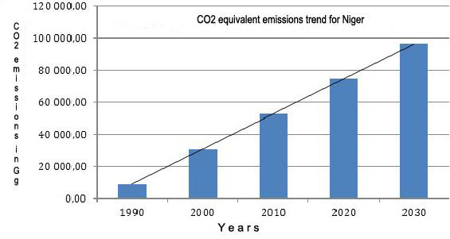

REPUBLIC OF NIGER
September, 26th, 2015
| National circumstances |
|
| Losses and damage |
|
| National objectives |
|
| Emissions for the reference year |
|
| Coverage and scope of the contribution |
|
| Contribution |
|
| Periods |
|
| Reduction of GHG emissions from now to 2030 |
|
| GHG emissions mitigation measures at the 2030 horizon | AFOLU (Agriculture, Forestry and Other Land Uses) :
Energy:
Renewable energy:
Energy efficiency:
|
| Implementation process |
|
| Assumptions and methodology |
|
| Climate change adaptation measures |
|
| Financial needs over ten years, for the period 20202030 |
|
| Ambitious and fair character |
|
Niger is a Sahelian country, three-fourths of the area of which (1,267,000 km2) is situated in the desert zone, which makes it highly exposed to climate risks, with rainfall that is highly variable during the year, in terms of both space and time.
Its population of 17.7 million has a high rate of demographic growth (3.9% per year) (RGPH, 2011). A completely landlocked country, its GDP was US $6.3 billion in 2015, or US $413 per inhabitant, with a human development index of 0.374, placing it in the lowest rank of countries (UNDP). The production of the primary sector, dominated by the agro- pastoral sector with 37% of the GNP and 80% of employment (INS), varies greatly from year to year.
The objectives of Niger’s INDC are to assure food security, combat poverty and contribute to the reduction of world greenhouse gas (GHG) emissions so that they will not increase in excess of 2°C in the 2050 horizon thanks to green growth and a low-carbon development strategy, the purpose of which is to assure resilience of the population and ecosystems.
It should be recalled that in June 1992 Niger signed the United Nations Framework Convention on Climate Change (UNFCCC) and ratified it on 25 July 1995. It also signed the Kyoto Protocol in December 1996 and ratified it on 17 March 2004. In the context of implementing this agreement, Niger prepared and presented to various Conferences of the Parties (COP’s) the Initial National Communication and the Second National Communication on climate change. The Third National Communication is now being prepared. In these communications, GHG inventories were performed in five sectors: land use and land use change and forestry; agriculture/animal husbandry; energy; industrial process and use of solvents; and waste management. For more than three decades Niger has made important investments related to reducing vulnerability to climate change, particularly with projects implementing the Maradi commitment (1984) to combat desertification. Although the results of these inventories showed that Niger is first of all a carbon sink because of GHG sequestration, the first three sectors, which are the greatest emission sources in the country, have been the subject of specific mitigation studies.
Like other non-Annex I countries of the list of the UNFCCC, Niger has no obligation to present GHG emissions mitigation measures. At the same time, the fact remains that, since it is a Party to the Convention and in conformity with the commitments made by the states Party to the UNFCCC at the time of COP20 in Lima, Peru, Niger is committed to contributing to the world effort to reduce GHG emissions so that the increase in the global temperature will not exceed 2°C in the 2050 horizon.
With this in view, Niger participates in the global effort to stabilise GHG emissions by presenting its ambitions and its capacity to mitigate these emissions. This capacity depends largely on the application of sectoral priorities and the national strategic frameworks for sustainable development. Thus, Niger’s priority is to focus first of all on strategies for adaptation and resilience to climate change.
For Niger’s INDC, the adaptation options considered as top priority are those that will permit the higher co-benefits with respect to climate change mitigation, particularly those good adaptation practices and techniques which, at the level of the country’s eight regions, will permit carbon sequestration and reduction of GHG emissions at the same time. These adaptation options have already been well defined in the existing strategic frameworks, such as the Economic and Social Development Plan (PDES 2012-2015 and 2016-2020), which flows from the Sustainable Development and Inclusive Growth Strategy - Niger 2035 (SDDCI), the 3N Initiative (Nigerans Feed Nigerans), the National Policy on Climate Change (PNCC), the Strategic Framework for Sustainable Land Management (SF-SLM), and the National Strategy and Plan of Action for Climate Change and Variability (SNPA-CVC).
The preparation of the INDC has included the following steps: designation of an INDC focal point; establishment of the Technical Steering Committee (TSC) made up of the stakeholders; the scoping mission and kick-off workshop; the collection of data and documentary research; the workshop on capacity development and validation of options and analytical results; the national validation workshop on the draft INDC; the adoption of the INDC by the government of Niger; and the submission of the INDC to COP21 in Paris on December 15.
The National Communications indicate that the AFOLU and energy sectors represent on average 89% and 9% of Niger’s total GHG emissions. Given the potential offered by the country’s resources, the national concerns are focussed on issues related to adaptation, particularly in the AFOLU (agriculture/animal husbandry and land use) sector, and on issues related to mitigation, principally in the AFOLU sector and the energy sector (transportation and residential and industrial energy).
The strategy is based on the vision of climatically intelligent agriculture and on access to modern energy services for everyone in 2030. The search for solid co-benefits that combine mitigation and adaptation is the basis for Niger’s INDC. However, while the AFOLU and energy sectors are the priority action areas of the INDC on climate change in Niger, the implementation of the INDC actual represents cross-sectoral support for all sectors of the economy.
Niger’s strategy is based on the vision of climate-smart agriculture and on access to modern energy services for everyone in 2030. Concerning the latter point, Niger has adopted the Regional White Book of the Economic Community of West African States (ECOWAS), which recognizes that access to modern energy services makes a major contribution to improved access to basic social services (health, education, potable water); to increased productivity of households in cooking, lighting and transportation; to giving impetus to the creation of income-producing economic activities; to freeing women from chores such as gathering wood and water and shelling peas and beans; to preserving the environment and improving the quality of life of rural populations; and to promoting local jobs and stabilising populations in order to contain the rural exodus and check uncontrolled urbanisation.
The AFOLU sector is characterised by the significant growth of cultivated areas at the expense of forests (the shrub-steppe habitat and grazing lands). This leads to the need to decouple the trends in these types of land occupation by upscaling the good practices of sustainable land management (SLM). The AFOLU sector consists of the following subsectors.
The loss of 100,000 ha per year to deforestation is due to the clearing of land for agriculture and the exploitation of timber, used principally as household firewood. The shrub-steppe habitat (grazing areas) is giving way to agriculture, with around 4 million ha of grazing land disappearing between 1975 and 2013. This makes it necessary to have an approach based on climate-smart agriculture (CSA). The figure below shows the changes in km² of agricultural land and shrub-steppes in Niger from 1975 to 2013 (CILSS/USGS, 2015).
The agriculture sub-sector consists of agricultural and grazing activities and its GHG emissions come from enteric fermentation (60%), manure management (39%), on-site burning of residues, agricultural soils and rice growing (1%).
The potential agricultural land represents 13% of the country, of which 40% is cultivated. Low fertilisation, reduced summer fallow and expansion of cultivated land leads to soil degradation through the growth of water and wind erosion and makes it impossible to assure that the biomass of the soil will be maintained.
Only 30% of the irrigable potential of 330,000 ha (I3N 2012-15), located essentially in the Niger river valley and some adjacent valleys, is utilised. Given the country’s need for rice, which in the long term will increase because of population growth, it is necessary to implement a policy of increasing the rice-growing area.
The potential for animal husbandry is significant (37 million head in 2008, SDE, 2013-35) thanks to vast grazing areas that can be exploited through transhumance and the development of large above-ground water resources. The population’s attachment to the practice of grazing is encouraged by the presence of a market of almost 160 million consumers in Nigeria, which shares a 1,500 kilometre border with Niger.
The National GHG Inventory Report of 2000 divides the GHG emissions of the energy sector among transportation (41%), residential (37%), power production units (15%) and manufacturing industries (5%). The other sub-sectors (business and institutional, agriculture-fishing-fish farming, mines) total less than 3%. National energy consumption is going to triple between now and 2030, principally because of strong growth in the residential, transportation, industrial and mining sub-sectors.
Taking 2000 as the base year (SNC) and an INDC implementation period extending from 2015 to 2030 (SF-SLM), the figure below shows the GHG emissions trend for Niger between 1990 and 2030.

The base year emissions are 30,801 GgCO2e, distributed between LULUCF: 55.6%; Agriculture: 34.6%; Energy: 8.5%; Waste: 1.2%; and Industrial processes: 0.06%.
The 2000 and 2030 BaU are based on the emissions levels in the three National Communications: Initial National Communication, 1990: 9,000 GgCO2e; Second National Communication, 2000: 30,801 GgCO2e; Third National Communication, 2008: 35,900 GgCO2e; BAU, 2020: 66,821 GgCO2e; BAU, 2030: 96,468 GgCO2e.
The upscaling of good SLM practices are, at the same time, measures of adaptation to climate change and measures to mitigate GHG emissions. Their implementation is the object of ongoing and planned projects and is accompanied by research into the improvement of agro-silvo pastoral productivity. These have been selected for the INDC: restoration of agricultural, forest and grazing land: 1,030,000 ha; assisted natural regeneration: 1,100,000 ha; dune fixation: 550,000 ha; management of natural forests: 2,220,000 ha; hedgerows: 145,000 km; planting of multi-use species: 750,000 ha; planting of Moringa oleifera: 125,000 ha; seeding of roadways: 304,500 ha; and private forestry: 75,000 ha. A total cost model for upscaling good SLM practices comes to US $1.27 billion. The strategic framework for sustainable land management (SF-SLM 20152029) indicates mobilisation of financing at the level of 10% of the costs of upscaling, i.e. US $107.6 in 2009, through the unconditional budget of the government and the financial partner. The conditional SLM comes to US $968.06 million.
The unconditional mitigation options in the energy sector concern the management of the residential sub-sector through rural electrification and the conservation and replacement of wood energy; the management of the transportation and residential sub-sectors; rural electrification; economising of wood energy and reduction of specific consumption in transportation; management of the sector concerned with the demand for and transformation and dissemination of renewable energies; improving the energy efficiency of the sectors; and promoting solar photovoltaic for pumping and electrification.
The conditional technologies for the energy sector in the medium and long terms relate to: exploitation of photovoltaic and thermal solar energy; exploitation of wind energy; construction of a nuclear power plant and a gas power plant; hydroelectricity; economising the use of wood for cooking; energy efficiency; use of biogas; and construction of frame-free buildings. The impact of the electricity scenarios on the reduction of GHG has been evaluated in an IAEA report.1 CO2 emissions per inhabitant will increase more significantly in the Electricity for All scenarios and the no action scenario (without reduction of GHG). This is explained by the greater utilisation of coal in electricity production under these two scenarios. The National Action Plan for Sustainable Energy for All (SE4ALL) is calculated to cost US $6 billion in the 2030 horizon. The unconditional financing that has been mobilised and the conditional financing total US $5.28 billion.
The mitigation potential of the energy sector is 700 GgCO2e, i.e. 0.7% of the total national emissions. A reduction in this emission is noted in the Electricity for All scenario beginning in 2025, which is explained by the growth of production from gas and by the entry of nuclear power production into the system, as shown in the figure below (CO2 emissions per inhabitant under three scenarios).

Source: PANEDT/IAEA, 2014
Niger’s contribution is based on a results-action mix. The emissions reduction of the two priority sectors, AFOLU, and energy is estimated at 33,400 GgCO2e, 34,7% compared to BaU in 2030. According to figure 3 below:

The overall cost of the conditional INDC is US $6.25 billion, or 87%, and the overall cost of the unconditional INDC is US $827 million, or 13%, as shown in the table below (summary of GHG emissions reductions and costs for 2020-2030).
| GHG reduction in comparison to BaU 2020 | GHG reduction in comparison to BaU 2030 | Costs compared to BaU 2030 in billions of USD | |
| Conditional INDC | 25% | 34.6% | 6.25 |
| Unconditional INDC | 2.5% | 3.5% | 0.83 |
Niger’s GHG emissions of 30,801 GgCO2e represent 2.8 t per inhabitant and only 0.061% of world CO2 emissions. Since it is non- Annex I Party to the UNFCCC, Niger does not have a quantitative obligation in terms of mitigation. However, despite its great need to develop its economy and the need to lift a large part of its population out of poverty, Niger’s ambition is to limit its emissions to 2.1 t CO2e per inhabitant in the 2030 horizon, within the framework of a conditional objective. To do this, Niger hopes to see a carbon price commensurate with international concerns (US $50/t), which would facilitate the double results/actions approach and optimise its contribution on a worldwide scale.
The reported GHG emissions contained in the three National Communications have been used to establish the greenhouse gas trends in Niger from 1990 to 2030. In the AFOLU sector, the EX ACT programme has been used to simulate the carbon stored in the projects between the two dates. In the energy sector, the LEAP model has been used, as shown in the figure below (projection of total energy demand in the 2029 horizon).

For the study on “the evaluation of Niger’s energy demand and supply for the period 2010-2035” (Ministry of Energy and Petroleum/Bureau of Energy, December 2013), the IAEA models MAED and MESSAGE were used.
Niger is not a country that represents a source of GHG emissions, but rather a net absorption sink. Moreover, since Niger is situated along the edge of the dry areas of the Sahara, it is directly impacted by the consequences of climate change. Taking into consideration the potential offered by the country’s resources, the national concerns are centred first of all on issues related to adaptation (with its mitigation co-benefits) in the priority AFOLU sector, and then in the priority energy sector (transportation and residential and industrial energy). The other areas important to the country are those related to transfer of technology and capacity building.
Various studies carried out in connection with the National Communications on climate change in Niger mention the increasing variability of precipitation in terms of both space and time; a trend of increased temperatures, particularly since 1996; increased frequency and intensity of extreme climate risks (droughts, floods, violent winds and sand and dust storms, the enemies of crops); the silting of water courses (Niger River valley and Lake Chad) and oases; drought losses in Niger estimated at more than US $70 million (World Bank, Climate Risk Assessment, Niger, 2012); the damage, including costs, caused to key sectors of the economy by the floods in the 2000’s, estimated at US $18 million (DPCS, OCHA 2009).
The national priorities for the AFOLU sector relate to improving the resilience of the agriculture, animal husbandry and forestry sub-sectors. The other priorities concern water resources, fishing, fauna, health and capacity building of the actors at all levels. Adapting to climate change is a challenge for the country. In order to achieve it, the adaptation techniques appropriate for Niger relate in particular to sustainable land management (SFSLM 2014), renewable energy and energy efficiency. Because of its relevance and its conclusions, the SF-SLM is the chosen reference document for the INDC.
Of the projects focussed on adaptation to climate change in Niger, the following are already under way:
The consultations with stakeholders have stressed the need for the INDC to seek complementarities with existing processes by preventing its contents from replacing, duplicating or weakening the national climate change response processes that are already under way, such as the National Adaptation Programme (NAP) and Nationally Appropriate Mitigation Actions (NAMA), which are the reference national processes for adaptation and mitigation. Thus, in order to be complementary with the existing processes, the INDC aims at specific measures and is committed to applying them. In the priority AFOLU priority sector, the implementation of the proposed INDC relates to the application of a set of techniques coming from the SF-SLM over the period 2015-2030. The table in Annex 2 lists the techniques from the SF-SLM and the objectives in terms of areas covered that have to be achieved to implement them in the INDC. Thus, the cost of upscaling the SF-SLM is estimated at US $1.27 billion (conditional), knowing that US $0.337 billion (unconditional) has already been mobilised, for an overall adaptation cost of US $1.607 billion. Mitigation in the energy sector requires much larger investments in order to permit access to clean, sustainable and affordable energy. However, in the National Adaptation Plan and the INDC’s vision for 2050, Niger would have to include all or part of a wide range of infrastructures (highways, bridges, dikes, construction projects to mobilise and enhance water resources, projects and networks to clean up used water and solid waste).
The co-benefits in the AFOLU sector consist of the results of implementing and upscaling the Climate-Smart Agriculture activities: strengthening of the good practices of assisted natural regeneration and recovery of degraded land; improvement of the balance sheet of cereals and fodder, along with food and nutritional security; development of local agroclimate information; job creation and reduction of the rural exodus; and strengthening of social cohesion. The projected annual benefits and costs of implementing and upscaling the techniques recommended in the SF-SLM and selected for the AFOLU sector in
Niger’s INDC are presented in the table in Annex 3, and the cost of implementing the SFSLM over the first ten years (2016-2030) is estimated at US $127,393,000. The cobenefits in the energy sector relate to improvement in the people’s living conditions as a result of increased income through social welfare, access to potable water, education and health, as well as access to new information and communication technologies (NICT) and energy equipment, development of local entrepreneurship, alleviation of women’s domestic duties and reduction of the rural exodus through job creation.
The techniques of climate-smart agriculture (CSA) are consistent with the objectives of the INDC (adaptation, mitigation and food security) by strengthening grassroots development. Climate-smart agriculture takes into account weather information, early warning, the management of risks and disasters and index-based agricultural weather insurance. The inclusion of climate change in local (PDC programme), regional and national planning (in the health and animal husbandry sectors) are tested and approved good practices in Niger and are therefore taken into consideration in the INDC. The advantages brought by the measures of climate-smart agriculture should satisfy from the outset all of the actors involved in the responses to climate change: on the one hand the people of Niger and their government, who thus set adaptation to climate change and food security as a priority and, on the other hand, the international community, which sees that the mitigation of climate change is effectively taken into account in the adaptation measures. In addition, these measures can be put in place immediately and thus make it possible to give priority to this action since the technical experimentation phase is being carried out in the various agroecological regions of the country (it remains only to upscale them) and because their impacts and their costs and benefits have been evaluated and their socioeconomic relevance and economic return have been demonstrated. Emphasising these objectives and results, which are clearly defined in Niger’s INDC, should allow the technical and financial partners to support this integrated vision of adaptation and mitigation. This will make it possible to galvanise their technical and financial support for the implementation of these responses, which are both workable and well suited to linking good climate change options to national development.
The process of implementing the INDC is an opportunity to build institutional and technical capacities, stimulate policy integration and promote inclusive development. The national institutions necessary to implement the INDC programmes exist. They are the Ministry of the Environment, Urban Hygiene and Sustainable Development (MESUDD), the agency currently responsible for the preparation of the INDC, in cooperation with the Executive Secretariat of the National Council of the Environment for Sustainable Development (CNEDD), the focal point for the UNFCCC. However, alternatives can be envisaged: institutional anchoring of the INDC to MESUDD, with focal points in the concerned institutions; establishment of an operationally independent executive agency; a supreme authority for the INDC, etc. An institutional analysis will have to be considered to evaluate these options.
To obtain the necessary financing, one option would be to request international aid from the donors (the conditional option). Another option would be to attract financing from the private sector to implement the SF-SLM. For this purpose, the communities have the possibility of selling mitigation services on the carbon market. The possible problems with this option are the difficulty of accessing this market and the low level of current prices for carbon credits. Whether the financing is acquired conditionally or unconditionally, followup actions will be essential to assure efficient use of the funding that is granted.
Another major obstacle to implementing the INDC is the country’s high rate of population growth. At present, this rate is 3.9% per year, although the government is committed to reducing the rate to 2.5% in the 2035 horizon (Sustainable Development and Inclusive Growth Strategy (SDDCI) 2012-2035).
The illiteracy of the rural population represents a real impediment to the dissemination of the technologies of climate-smart agriculture and sustainable land management so that these techniques can be upscaled. Effective schooling and the spread of literacy among the rural population, accompanied by a rural extension system, are in any case necessary to allow understanding and implementation of the techniques recommended in the INDC.
The low qualification level of human resources, the insufficiency of logistical means and the institutional conflicts related to supporting the upscaling of good practices require strengthening of rural leadership, particularly in the AFOLU sector. It is also necessary to secure agricultural and pastoral land tenure and to have competent field operators to improve the absorption capacity.
The implementation of these measures requires improved coordination between institutions, synergy between policies and strategies, and appropriate allocation of expertise in the case of cross-sector projects.
The sustainable development objectives to which the INDC contributes cannot be realised without the transfer of appropriate technologies and the financing and building of competencies, while taking into account the national economic and social development priorities defined for the various strategic frameworks.
Attaining the objectives of Niger’s INDC requires a total investment estimated at US $8.667 billion, US $7.5 billion of which (87% of the total) is dependent on access to new sources of financing (the Green Climate Fund and other climate financing mechanisms). The unconditional financing coming from the government’s own resources and public development aid is estimated at US $1.167 billion, or 13% of the total cost.
In order to implement the INDC, Niger will emphasise the need for the transfer of knowledge and technology in the priority sectors of AFOLU and energy. This needs relate essentially to the upscaling of the good practices of climate-smart agriculture, to renewable energy technologies, to energy efficiency and to other action areas such as integrated water resources management (IWRM), urban waste management, fauna, fishing, social and health protection etc.
Capacity building relates to the design of bankable projects and the understanding of the donors’ rules and procedures; the evaluation of adaptation projects in terms of economic and financial analysis; the establishment of the measurement, notification and verification system (MNV); knowledge and understanding of the INDC implementation process; strategic environmental and social assessments (SESA) and environmental and social impact statements (ESIA); land use planning; good practices for carbon management and sequestration; the carbonisation chain of charcoal for domestic use; the mapping of soils; the development of a national forestry plan; and the rational management of liquid and solid wastes etc. These activities should concern, first of all, the stakeholders in the INDC implementation process in Niger: the actors concerned with implementation of the INDC; the economic actors, primarily rural smallholders, the Producer Organisations (PO: agriculture, animal husbandry etc.) and any INDC investor that already has in place advanced planning for his project; and representatives of the civil society and NGO’s. If INDC investments represent around 83% of the total amount, the operating cost can be estimated at 17% (particularly follow-up and evaluation), 10% of which is to be allocated to technology transfer and capacity building.
The INDC’s institutional implementation structure includes the following: a “Country monitoring and evaluation system” which takes into account gender, measurement, notification and verification (MNV) procedures, and a register of INDC projects.
The monitoring and evaluation system and INDC capitalisation will be implemented based on: monitoring and evaluation of the implementation process which will examine aspects of inter-sector coordination, of the decision-making process, etc., follow-up and evaluation of the effects and impacts of the INDC based on relevant criteria and indicators and the definition of corrective measures for climate, environmental, economic and social protection, monitoring of risk and of the evolution of vulnerability to climate change at the national level, and capitalisation of experiences and the lessons learned.
| AFD | Agence Française de Développement (French Development Agency) |
| AFOLU | Agriculture, Forestry and Other Land Uses |
| ANR | Assisted Natural Regeneration |
| BaU | Business as Usual (normal course of affairs without the INDC) |
| CBA | Community Based Adaptation |
| CC | Climate Change |
| CDM | Clean Development Mechanism |
| CILSS | Comité Inter-Etats de Lutte contre la Sécheresse au Sahel (Inter-State Committee to Combat Drought in the Sahel) |
| CSA | Climate-Smart Agriculture |
| CNEDD | Conseil National de l’Environnement pour un Développement Durable (National Environmental and Sustainable Development Council) |
| CNI | Initial National Contribution |
| CO2 | Carbon dioxide |
| COP | Conference of the Parties |
| CTN-CVC | Commission Technique Nat. sur les Chang. et la Variabilité Clim. (National Technical Commission on Climate Change and Variability) |
| ECOWAS | Economic Community of the West African States |
| ESIA | Environmental and Social Impact Assessment |
| Ex-ACT | Ex-Ante Carbon-Balance Tool (software) |
| FED | European Development Fund |
| FEM | Global Environment Facility |
| GCF | Green Climate Fund |
| GDP | Gross Domestic Product |
| Gg CO2e | Gigagrammes equivalent carbon dioxide |
| GHG | Greenhouse gas |
| I3N | Initiative « Les Nigériens Nourrissent les Nigériens » (Nigerans Feed Nigerans Initative) |
| IAEA | International Atomic Energy Agency |
| INDC | Intended Nationally Determined Contribution |
| INS | Institut National des Statistiques (National Institute of Statistics) |
| LDC | Less Developed Countries |
| LEAP | Long-range Energy Alternatives Planning system (software) |
| LULUCF | Land Utilisation, Land Use Change and Forestry |
| MAED | Energy Demand Analysis Model |
| MESSAGE | Model for Energy Supply Strategy Alternatives and their General Environmental Impacts |
| MESUDD | Ministry of the Environment, Urban Hygiene and Sustainable Development |
| MNV | Measurement, Notification, Verification (MDP, REDD etc.) |
| NAMA | Nationally Appropriate Mitigation Actions |
| NAP | National Adaptation Programme |
| OCHA | Office for the Coordination of Humanitarian Affairs |
| P2AA | African Climate Change Adaptation Programme |
| PANA | National Action Plan for Adaptation |
| PASADEM | Maradi Project to Support Food Security for Development |
| PDC | Plan de Développement Communal (Commune Development Plan) |
| PDES | Programme de Développement Economique et Social (Economic and Social Development Plan) |
| PNCC | Politique Nationale sur les Changements Climatiques (National Climate Change Policy) |
| RGPH | Recensement Général de la Population et de l’Habitat (General Census of Population and Housing) |
| SCN | Seconde Communication Nationale (Second National Communication) |
| SDDCI | Stratégie de Développement Durable et de Croissance Inclusive (Sustainable Development and Inclusive Growth Strategy) |
| SDE | Schéma de Développement de l’Elevage (Animal Husbandry Development Scheme) |
| SESA | Strategic Environmental and Social Assessment |
| SLM | Sustainable Land Mangement |
| SF-SLM | Strategic Framework for Sustainable Land Management |
| SNPA/CVC | Strat. Nat. et le Plan d’Action en matiΠre de Chang. et Variabilité Clim. (National Strategy and Action Plan for Climate Change and Variability) |
| TARAM | Tool for Afforestation and Reforestation Approved Methodologies |
| TCN | TroisiΠme Communication Nationale (Third National Communication) |
| TFP | Technical and Financial Partner |
| TMC | Technical Monitoring Committee |
| UNDP | United National Development Programme (PNUD) |
| UNFCCC | United Nations Framework Convention on Climate Change |
| Techniques | Surface area (in thousands of ha) | First quantified benefit | Second quantified benefit | Costs (in thousands of $) |
|---|---|---|---|---|
| Restoration of agricultural land | 1,030 | Increased yields | Increased earnings | 309,000 |
| Assisted natural regeneration | 1,100 | Increased yields | Increased earnings | 33,000 |
| Dune fixation | 550 | Increased yields | Increased earnings | 220,000 |
| Management of natural forests | 2,220 | Timber. | - | 222,000 |
| Planting of hedgerows (145,000 km) : | 29 | Increased yields | Increased timber | 46,980 |
| Planting of gum trees and doum palms | 750 | Gum and leaves | Increased timber | 300,000 |
| Planting of Moringa oleifera | 125 | Leaves | - | 37,500 |
| Herbaceous seeding | 304.5 | Straw and fodder | - | 30,450 |
| Private forestry | 750 | Timber | - | 75,000 |
| TOTAL | 6,858 | 1,273,930 |
Source: Workshop on capacity building of actors, CPDN 2015.
The annual cost of implementing the Strategic Framework for Sustainable Land Management (SF-SLM) over the first ten years (2016-2030) is estimated at US $127,393,000, as indicated in the table below (proposed schedule and budget for Niger’s INDC adaptation measures, in areas and costs per year for the first ten years).
| SF-SLM technologies | Projected annual areas for the period 2016-30 (in ha/year) | Annual budget for the period 2016-30 (in US$) |
|---|---|---|
| 1. Restoration of agricultural land | 68,667 | 30,900,000 |
| 2. Assisted natural regeneration | 73,333 | 3,300,000 |
| 3. Dune fixation | 36,666 | 22,000,000 |
| 4. Management of natural forests | 148,000 | 22,200,000 |
| 5. Hedgerows | 9,667 | 4,698,000 |
| 6. Planting of gum trees and douma palms | 50,000 | 30,000,000 |
| 7. Planting of Moringa oleifera | 8,333 | 3,750,000 |
| 8. Herbaceous seeding | 20,300 | 3,045,000 |
| 9. Private forestry | 50,000 | 7,500,000 |
| TOTAL | 127,393,000 |
Source: Workshop on capacity building of actors, INDC, 2015.